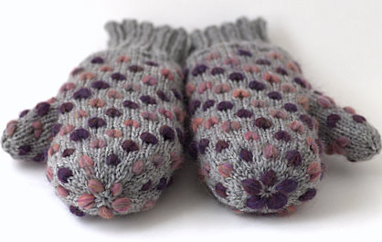
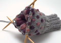
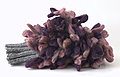
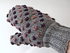

|
||
Premium Patterns Wintry Mix Mitts Love Bytes HawkeyeFree Patterns Kiddie Cadet Summerlin Ruffled Scarf Seamless DS Sock Simply Seamless Pouch Myriads of MushroomsExtras DIY Mitten Blocker Felt Patch Tutorial Yarn Dyeing Tutorial Needle Pouches Knitting Journal |
December 09, 2007 - Posted by Grace SchneblyWelcome to the Mitten Factory Project Specs I know, I’m sure you’re all thinking, “What?? They’ve made even MORE mittens?” Well it’s true! This is the 6th pair of mittens that either Alice or I have made in the last month, and trust me we have no intention of stopping. But can you believe that out of all of those, I still didn’t have a pair for myself until now? Alice made a majority of the mittens (4 pairs), and the only ones I had made before these were the Chevalier Mittens for a friend for Christmas. These are only my second pair of mittens ever, but trust me they won’t be my last. I’ve been interested in making a pair of thrummed mittens ever since I moved to Boston. The winters here can be so cold, and the worst part isn’t the below freezing temperatures or the snow, it’s the wind. The wind cuts right through every layer of clothing, so a regular pair of mittens just won’t do on the really bad days. However I think that these mittens are the solution since they have an extra thick layer of merino wool on the inside. I’ve tried them out around the house, and although my dexterity is pretty much taken away completely, my hands stay nice and toasty warm. When I started I really didn’t know how this whole thrumming business worked, but Hello Yarn’s tutorial on how she does thrums was an amazing resource. I really recommend checking it out especially since she has included a free thrummed mitten pattern at the bottom of the page. I think some of the thrums I made were a little too long, causing the mittens look a little lumpy when you’re wearing them. I don’t really mind though, and if you work with them it really isn’t so bad. Eventually they’ll all felt down into mass with wear anyways! The roving I chose was some Merino Top I had sitting around since I was on my last spinning kick. It’s really gorgeous and soft stuff with great depth of color. I purchased it from Mind’s Eye Yarns in Cambridge, MA, and still have about 6 oz left. Maybe I’ll dust the old spindle and make some yarn for a matching hat! The pattern calls for four different colors of roving, but it worked out nicely with two. On the second mitten I reversed the chart so the colors spiraled up the mitten in the opposite direction as the first. This pattern was a lot of fun to knit and the instructions were clear and easy to follow. If anything the pattern was too easy. I would have liked to see maybe more information on sizing since mine turned out a tad short. Also I wish that there was a thumb gusset instead of just an afterthought thumb. The pattern does include instructions of a child’s size pair which is really nice. I do love the way they turned out, especially the color combo. I can tell that they’re going to fuzz up quite a bit (the first mitten has fuzzed already just wearing it for a couple minutes here and there) and I am just hoping that the roving doesn’t snag too badly. Since it is cold out today, I’m going to wear these when I wait for the bus to go to the Bazaar Bizarre! |
   Recent ReviewsRecent Posts
 Our Favorites
|
| © 2007 KathrynIvy.com | ||
{kind=link}
{kind=link}
{kind=link}